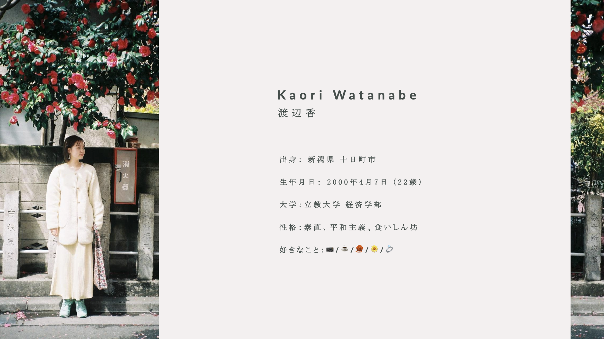
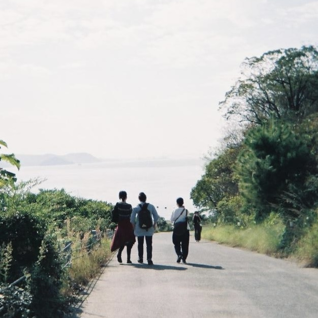
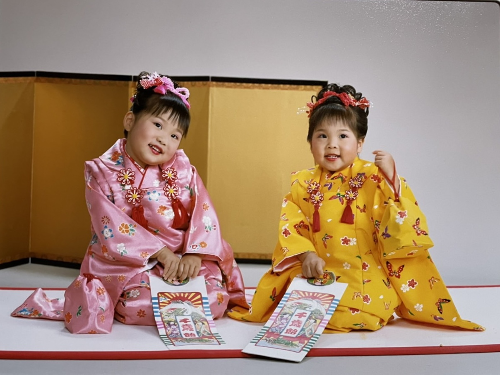
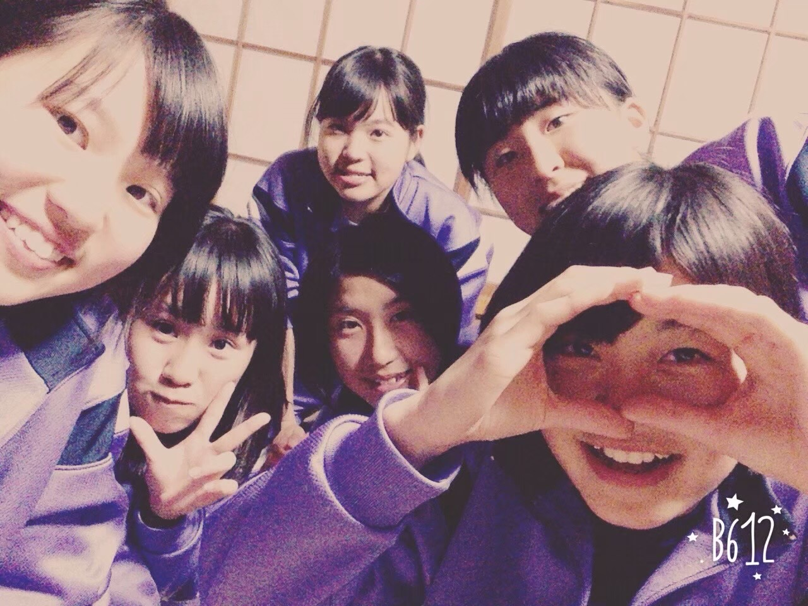
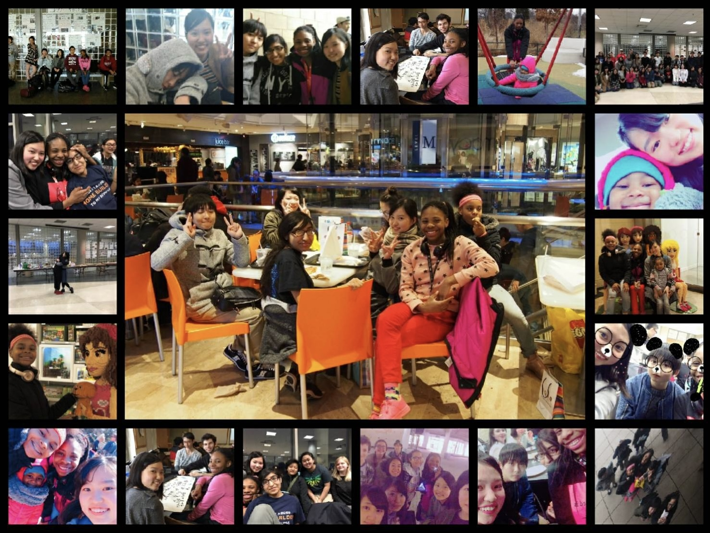
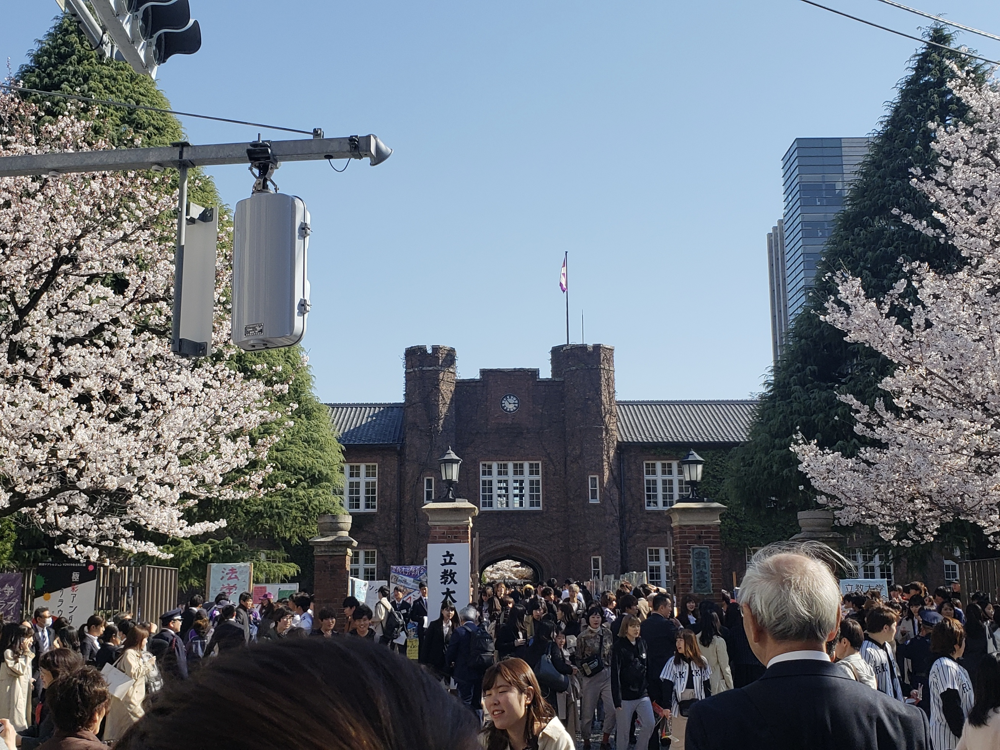
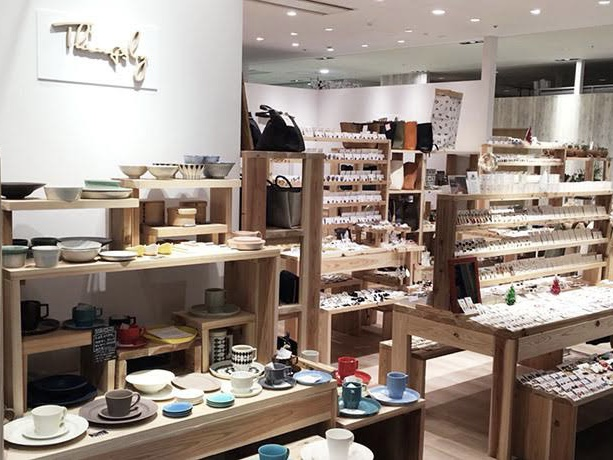
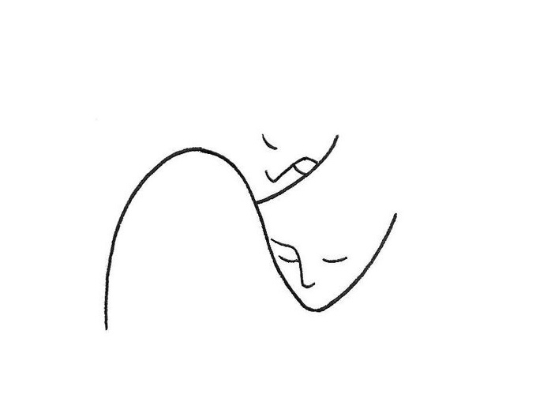

海と山とお花が大好きです。今回の写真は自分で撮ったものです！
フィルムの良さは実際見た景色と現像した時に初めて映る景色に二度感動できることだと思ってます。

About



さざなみの世界
ほんの少しでも自分の心が動いて、
それが自分にとって大切なものだと感じられたら
それを周りの尺度に合わせて無くさずに済むような
そのさざなみがいちばん大きな海に繋がっていると
信じられるような世界。
たまたま見つけたフレーズですが、
「その人らしさ」を自他共に尊重できる社会になったら
素敵だなと思い、就活中とても大事にしていた言葉です。

Memories
わたしの成長記録。「心」が動いた瞬間。

幼少期
私の双子の妹。家族であり１番の親友のような存在。週一必ず電話しています笑
2023.10

中学校
1学年１クラスしかない小さな中学校。のびのび育ちました。体操着がダサいですがそれも良い思い出。
2015.9

高校
シカゴとホノルルに海外研修へ。自分の悩みがちっぽけに思えるくらい外の世界は広いんだなと気づきました。
2018.2.

大学 - 立教に入学
都会にきて人がたくさんびっくり。でもワクワク。他の人と比べて落ち込んだこともありました。
2019.4
大学 - AIESECに4年所属
学生団体に4年間熱中。志高く諦めない姿勢を仲間から学びました。
2019-2023
大学 - ボランティア
複雑な家庭の子供達へのアプローチ。自分の無力さを痛感。私の強みってなんだろう？
2019-2021

大学 - アルバイト
やっぱり装飾品が昔から好きだな。ハンドメイドアクセサリー屋さん。繊細な違いやこだわりに感動しました。
2020-2022
大学 - デザイン/プロモーション
学生団体で広報担当を務めた。イベントを届けたい人に届けるためにどういう伝え方ができるか考えることにやりがいを感じていました。
2021-2023

大学 - 家族との別れ
父との別れ。苦しかったけど生きるとか家族とか自分の過去/将来について考えるきっかけに。その結果「ものづくりを通して日常に彩りを届けたい」と決意しました。
2022-2023